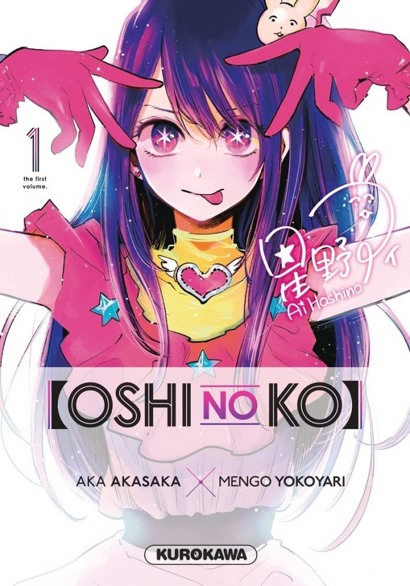

#1 Oshi No Ko

Résumé du manga :
Le docteur Gorô Amamiya est obstétricien dans un hôpital de campagne. Il est loin du monde de paillettes dans lequel évolue Ai Hoshino, une chanteuse au succès grandissant dont il est “un fan absolu”. Ces deux-là vont se rencontrer dans des circonstances peu favorables, mais cet événement changera leur vie à jamais !
Résumé de l'animé :
Oshi no Ko raconte l’histoire d’Ai Hoshino, une célèbre et talentueuse idole japonaise du groupe B-Komachi. Âgée de seulement 16 ans, Ai tombe enceinte de jumeaux, dont un garçon et une fille. Afin de garder son image de parfaite idole, elle souhaite par-dessus tout cacher ce secret au grand public.
Ressenti des fans :
Les fans ont été agréablement surpris par cet anime. Ils ont apprécié la manière dont il aborde des sujets rares et sa petite dose d'humour. Les fans ont trouvé les personnages complexes et terriblement attachants. Ils ont également apprécié le fait que l'animé traite des enjeux originaux, comme comprendre ce qu'il se passe derrière les coulisses du show-business ainsi que la santé mentale des stars. Certains fans ont même décrit Oshi No Ko comme leur plus belle découverte de l'année 2023.
#2 Demon Slayer: Kimetsu no Yaiba - Le Village des forgerons

Résumé du manga :
Dans l’arc du Village des Forgerons, Tanjiro se rend au village pour remplacer son épée. Il rencontre Mitsuri Kanroji, le Pilier de l’Amour et Genya Shinazugawa, un des pourfendeurs de démons. Après s’être entraîné avec une poupée d’entraînement, Tanjiro découvre une épée vieille de 300 ans. C’est à ce moment que Hantengu, le démon du Rang Quatre Supérieur se présente et la bataille commence.
Résumé de l’animé :
L’adaptation animée suit fidèlement le manga. Les scènes d’action sont bien animées et les mouvements de foudre sont particulièrement impressionnants. L’arc se termine par une bataille intense entre Tanjiro Kamado, Nezuko Kamado, Genya Shinazugawa et Mitsuri Kanroji contre Hantengu.
Ressenti des fans :
Les fans ont exprimé leur admiration pour la résilience de Tanjiro et ont été impressionnés par les mouvements de foudre. Cependant, certains fans ont exprimé leur déception en disant qu’ils étaient restés sur leur faim malgré un excellent premier épisode et un fantastique dernier épisode.